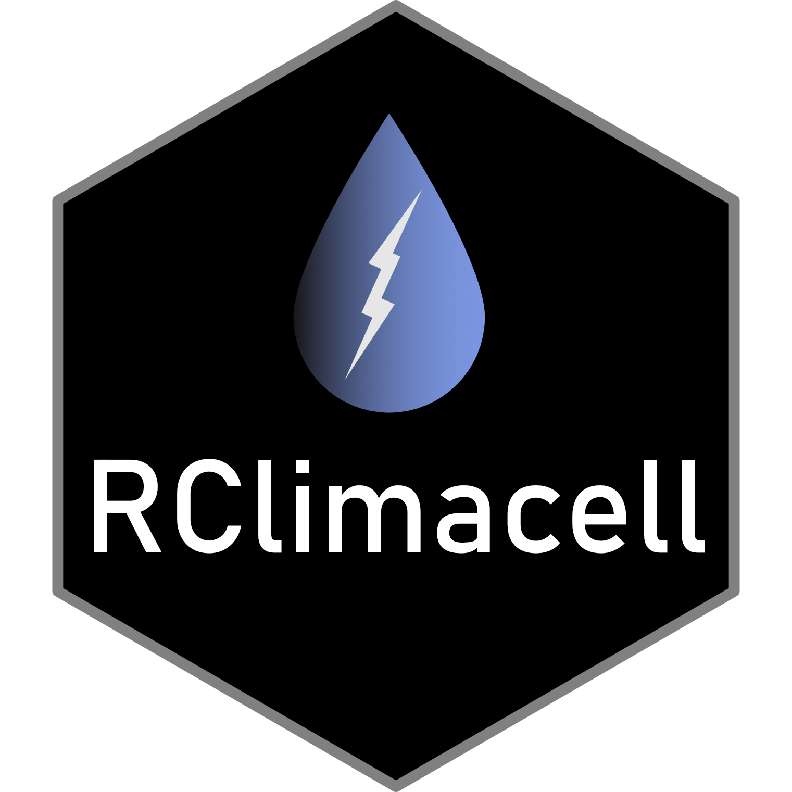

RClimacell 
The {RClimacell} package is an unofficial R package that enables basic interaction with Climacell’s API using the Timeline Interface. The functions within this package are tested against some of the CORE data layers.
Please note that using the functions within this package require a valid API key.
More information about the Climacell API can be found on their docs page.
Lubridate Issue
As of 24 Feb, there is a known issue with using the package {lubridate} and it seems to be affecting macOS users. The ‘fix’ has been to add the following line to the .Renviron file or the .Rprofile (I applied the code into the .Renviron file and it worked):
TZDIR="/Library/Frameworks/R.framework/Resources/share/zoneinfo/"{lubridate} version 1.7.10 fixes this issue and is available on CRAN.
Installation
CRAN version can be installed as follows:
install.packages('RClimacell')You can install the development version from GitHub with:
# install.packages("devtools")
devtools::install_github("nikdata/RClimacell")Usage
Not every variable in each of the functions will have a value. Missing values are denoted by NA and indicate that the API did not return a value for the specific date/time and function call.
Temperature
library(RClimacell)
climacell_temperature(api_key = Sys.getenv("CLIMACELL_API"),
lat = 41.878685,
long = -87.636011,
timestep = '1d',
start_time = lubridate::now(),
end_time = lubridate::now() + lubridate::days(3))
#> # A tibble: 4 x 5
#> start_time temp_c temp_feel_c dewpoint humidity
#> <dttm> <dbl> <dbl> <dbl> <dbl>
#> 1 2021-03-21 11:00:00 16.1 14.7 1.21 76.2
#> 2 2021-03-22 11:00:00 19.3 19.3 6.11 85.7
#> 3 2021-03-23 11:00:00 11.4 11.4 9.98 96.4
#> 4 2021-03-24 11:00:00 13.8 13.8 9.69 96.4Wind
library(RClimacell)
climacell_wind(api_key = Sys.getenv("CLIMACELL_API"),
lat = 41.878685,
long = -87.636011,
timestep = '1d',
start_time = lubridate::now(),
end_time = lubridate::now() + lubridate::days(3))
#> # A tibble: 4 x 4
#> start_time wind_speed wind_gust wind_direction
#> <dttm> <dbl> <dbl> <dbl>
#> 1 2021-03-21 11:00:00 7.2 11.0 181.
#> 2 2021-03-22 11:00:00 7.78 13.3 186.
#> 3 2021-03-23 11:00:00 9.85 14.2 140.
#> 4 2021-03-24 11:00:00 10.4 14.9 216.Precipitation
library(RClimacell)
df_precip <- climacell_precip(api_key = Sys.getenv("CLIMACELL_API"),
lat = 41.878685,
long = -87.636011,
timestep = '1h',
start_time = lubridate::now(),
end_time = lubridate::now() + lubridate::days(3))
dplyr::glimpse(df_precip)
#> Rows: 73
#> Columns: 14
#> $ start_time <dttm> 2021-03-22 04:02:00, 2021-03-22 05:02:00, 2…
#> $ precipitation_intensity <dbl> 0, 0, 0, 0, 0, 0, 0, 0, 0, 0, 0, 0, 0, 0, 0,…
#> $ precipitation_probability <dbl> 0.0, 0.0, 0.0, 0.0, 0.0, 0.0, 0.0, 0.0, 0.0,…
#> $ precipitation_type_code <dbl> 1, 1, 1, 1, 1, 1, 1, 1, 1, 1, 1, 1, 1, 1, 1,…
#> $ precipitation_type_desc <chr> "Rain", "Rain", "Rain", "Rain", "Rain", "Rai…
#> $ visibility <dbl> 11.02, 16.00, 16.00, 16.00, 16.00, 16.00, 16…
#> $ pressure_surface_level <dbl> 1002.55, 1003.39, 1003.39, 1002.67, 1001.35,…
#> $ pressure_sea_level <dbl> 1021.15, 1021.79, 1021.80, 1021.12, 1019.80,…
#> $ cloud_cover <dbl> 0.53, 3.71, 23.21, 100.00, 100.00, 100.00, 1…
#> $ cloud_base <dbl> NA, NA, NA, 7.26, 0.63, 0.16, 7.79, 5.50, 4.…
#> $ cloud_ceiling <dbl> NA, NA, NA, NA, 8.70, 8.21, 7.65, 7.09, 5.78…
#> $ solar_ghi <dbl> 0.00, 0.00, 0.00, 0.00, 0.00, 0.00, 0.00, 0.…
#> $ weather_code <dbl> 1000, 1000, 1100, 1001, 1001, 1001, 1001, 10…
#> $ weather_desc <chr> "Clear", "Clear", "Mostly Clear", "Cloudy", …Celestial (sunset time, sunrise time, and moon phase)
library(RClimacell)
df_celestial <- climacell_celestial(api_key = Sys.getenv("CLIMACELL_API"),
lat = 41.878685,
long = -87.636011,
timestep = '1d',
start_time = lubridate::now(),
end_time = lubridate::now() + lubridate::days(5))
dplyr::glimpse(df_celestial)
#> Rows: 6
#> Columns: 5
#> $ start_time <dttm> 2021-03-21 11:00:00, 2021-03-22 11:00:00, 2021…
#> $ sunrise_time <dttm> 2021-03-21 11:53:20, 2021-03-22 11:50:00, 2021…
#> $ sunset_time <dttm> 2021-03-22 00:05:00, 2021-03-23 00:05:00, 2021…
#> $ moon_phase_code <int> 2, 2, 2, 2, 2, 2
#> $ moon_phase_description <chr> "First Quarter", "First Quarter", "First Quarte…Climacell Core (all Core Layer data)
This function aims to retrieve all of the Core Layer data using the Timeline Interface. All of the data are retrieved in a single API call. Note that if the timestep is not ‘1d’, then the moon phase, sunrise time, and sunset times will not be available
library(RClimacell)
df_core <- climacell_core(api_key = Sys.getenv("CLIMACELL_API"),
lat = 41.878685,
long = -87.636011,
timestep = '1m',
start_time = lubridate::now(),
end_time = lubridate::now() + lubridate::hours(3))
#> Moonphase, Sunrise Time, and Sunset Times are only available if timestep is '1d'.
dplyr::glimpse(df_core)
#> Rows: 181
#> Columns: 21
#> $ start_time <dttm> 2021-03-22 04:02:00, 2021-03-22 04:03:00, 2…
#> $ temp_c <dbl> 11.66, 11.66, 11.66, 11.66, 11.66, 11.66, 11…
#> $ temp_feel_c <dbl> 9.44, 9.43, 9.43, 9.42, 9.41, 9.40, 9.39, 9.…
#> $ weather_code <dbl> 1000, 1000, 1000, 1000, 1000, 1000, 1000, 10…
#> $ weather_desc <chr> "Clear", "Clear", "Clear", "Clear", "Clear",…
#> $ dewpoint <dbl> -0.61, -0.61, -0.61, -0.61, -0.61, -0.61, -0…
#> $ humidity <dbl> 43.00, 43.00, 43.00, 43.00, 43.00, 43.00, 43…
#> $ wind_speed <dbl> 0.44, 0.44, 0.44, 0.44, 0.44, 0.44, 0.45, 0.…
#> $ wind_direction <dbl> 175, 175, 175, 175, 175, 175, 175, 175, 175,…
#> $ wind_gust <dbl> 2.23, 2.23, 2.23, 2.23, 2.23, 2.23, 2.24, 2.…
#> $ solar_ghi <dbl> 0, 0, 0, 0, 0, 0, 0, 0, 0, 0, 0, 0, 0, 0, 0,…
#> $ precipitation_type_code <dbl> 1, 1, 1, 1, 1, 1, 1, 1, 1, 1, 1, 1, 1, 1, 1,…
#> $ precipitation_type_desc <chr> "Rain", "Rain", "Rain", "Rain", "Rain", "Rai…
#> $ precipitation_probability <dbl> 0, 0, 0, 0, 0, 0, 0, 0, 0, 0, 0, 0, 0, 0, 0,…
#> $ precipitation_intensity <dbl> 0, 0, 0, 0, 0, 0, 0, 0, 0, 0, 0, 0, 0, 0, 0,…
#> $ cloud_cover <dbl> 0.53, 0.58, 0.62, 0.67, 0.71, 0.76, NA, 0.85…
#> $ cloud_base <dbl> NA, NA, NA, NA, NA, NA, NA, NA, NA, NA, NA, …
#> $ cloud_ceiling <lgl> NA, NA, NA, NA, NA, NA, NA, NA, NA, NA, NA, …
#> $ visibility <dbl> 11.02, 11.11, 11.20, 11.28, 11.37, 11.45, NA…
#> $ pressure_surface_level <dbl> 1002.55, 1002.57, 1002.58, 1002.60, 1002.61,…
#> $ pressure_sea_level <dbl> 1021.15, 1021.15, 1021.15, 1021.15, 1021.15,…
library(RClimacell)
df_core2 <- climacell_core(api_key = Sys.getenv("CLIMACELL_API"),
lat = 41.878685,
long = -87.636011,
timestep = '1d',
start_time = lubridate::now(),
end_time = lubridate::now() + lubridate::days(5))
dplyr::glimpse(df_core2)
#> Rows: 6
#> Columns: 25
#> $ start_time <dttm> 2021-03-21 11:00:00, 2021-03-22 11:00:00, 2…
#> $ temp_c <dbl> 13.36, 19.26, 11.43, 13.75, 4.98, 1.51
#> $ temp_feel_c <dbl> 14.69, 19.26, 11.43, 13.75, 4.98, -2.90
#> $ weather_code <dbl> 1102, 1102, 4200, 4000, 5100, 5001
#> $ weather_desc <chr> "Mostly Cloudy", "Mostly Cloudy", "Light Rai…
#> $ dewpoint <dbl> 1.21, 6.11, 9.98, 9.69, 4.38, -1.95
#> $ humidity <dbl> 76.16, 85.70, 96.41, 96.45, 96.26, 75.00
#> $ wind_speed <dbl> 7.20, 7.78, 9.85, 10.39, 11.23, 8.94
#> $ wind_direction <dbl> 187.93, 186.20, 140.46, 223.65, 29.04, 39.73
#> $ wind_gust <dbl> 11.04, 13.32, 14.17, 14.90, 14.58, 11.30
#> $ solar_ghi <dbl> 790.76, 710.60, 251.73, 493.23, 93.24, 481.85
#> $ precipitation_type_code <dbl> 1, 1, 1, 1, 2, 2
#> $ precipitation_type_desc <chr> "Rain", "Rain", "Rain", "Rain", "Snow", "Sno…
#> $ precipitation_probability <dbl> 0, 5, 70, 40, 65, 20
#> $ precipitation_intensity <dbl> 0.0000, 0.0000, 1.6900, 0.3688, 0.7457, 0.01…
#> $ cloud_cover <dbl> 100, 100, 100, 100, 100, 100
#> $ cloud_base <dbl> 8.08, 7.22, 2.53, 3.21, 1.06, 0.34
#> $ cloud_ceiling <dbl> 8.70, 7.75, 8.79, 5.44, 4.01, 1.28
#> $ visibility <dbl> 16.00, 16.00, 16.00, 20.75, 24.14, 24.14
#> $ pressure_surface_level <dbl> 1006.91, 1002.48, 993.56, 990.79, 993.08, 10…
#> $ pressure_sea_level <dbl> 1018.92, 1014.60, 1004.04, 1004.18, 1012.08,…
#> $ sunrise_time <dttm> 2021-03-21 11:53:20, 2021-03-22 11:50:00, 20…
#> $ sunset_time <dttm> 2021-03-22 00:05:00, 2021-03-23 00:05:00, 20…
#> $ moon_phase_code <dbl> 2, 2, 2, 2, 2, 2
#> $ moon_phase_description <chr> "First Quarter", "First Quarter", "First Qua…See the vignette for more information.